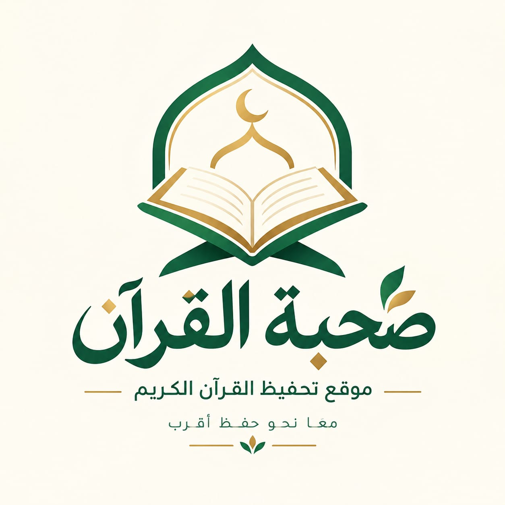

صُحبة القرآنرحلة نبدأها معًا، ونمضي فيها حتى يصبح القرآن رفيقًا لحياتنا.
صحبة القرآن منصة تهدف إلى تيسير رحلة حفظ كتاب الله الكريم ومراجعته من خلال بيئة إيمانية تجمع بين التعلم، والاستمرار، والمتابعة، والاستعانة بأهل الاختصاص.
نسعى إلى مساعدة كل من يرغب في حفظ القرآن على البدء بخطوات بسيطة ومنظمة، ومتابعة تقدمه، والمحافظة على ورده اليومي، ليكون حفظ القرآن أقرب إلى الجميع، مهما اختلفت ظروفهم أو أماكن إقامتهم.
غايتنا أن نُيسر طريق الحفظ، ونُعين على الثبات، ونصنع صحبةً يظل القرآن رفيقها.
نوفر لك خيارات متنوعة لحفظ القرآن الكريم ومراجعته، سواء كنت تفضل التعلم ضمن مجموعة أو الحصول على متابعة فردية مع محفظ متخصص.
تعلم وحفظ ومراجعة القرآن الكريم ضمن مجموعة صغيرة في بيئة تشجع على الاستمرار والتعاون.
مثالية للبدايات الهادئة وبناء ورد يومي مرن.
توازن مثالي بين سرعة الإنجاز ورسوخ الحفظ.
اهتمام مضاعف بالتجويد وتثبيت الآيات في الصدر.
لمن يبحث عن متابعة أكثر تركيزًا واهتمامًا بالتقدم الفردي، نوفر جلسات تسميع فردية مع محفظ أو محفظة متخصصين.
متابعة فردية مع معلمة متخصصة في تحفيظ القرآن الكريم
عدد الحصص الأسبوعية
إجمالي الحصص الشهرية
الاشتراك الشهري
مدة الحلقة
حصتان أسبوعيًا
8 حصص شهريًا
200 جنيه شهريًا
نصف ساعة
متابعة فردية مع محفظ متخصص في تحفيظ القرآن الكريم
عدد الحصص الأسبوعية
إجمالي الحصص الشهرية
الاشتراك الشهري
مدة الحلقة
حصتان أسبوعيًا
8 حصص شهريًا
200 جنيه شهريًا
نصف ساعة